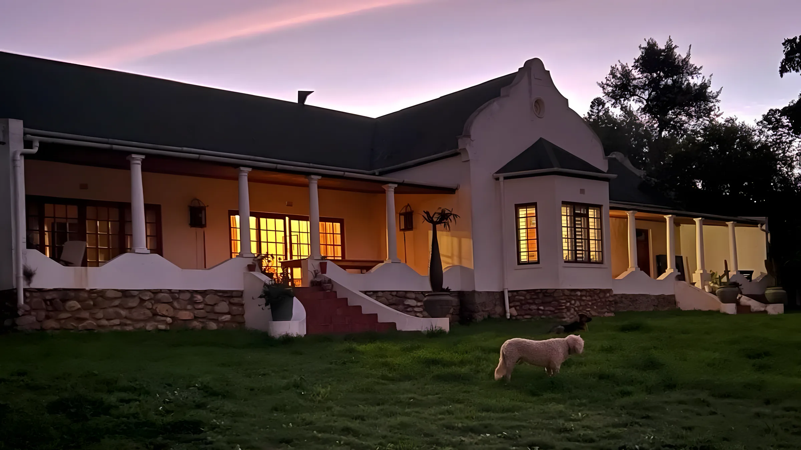
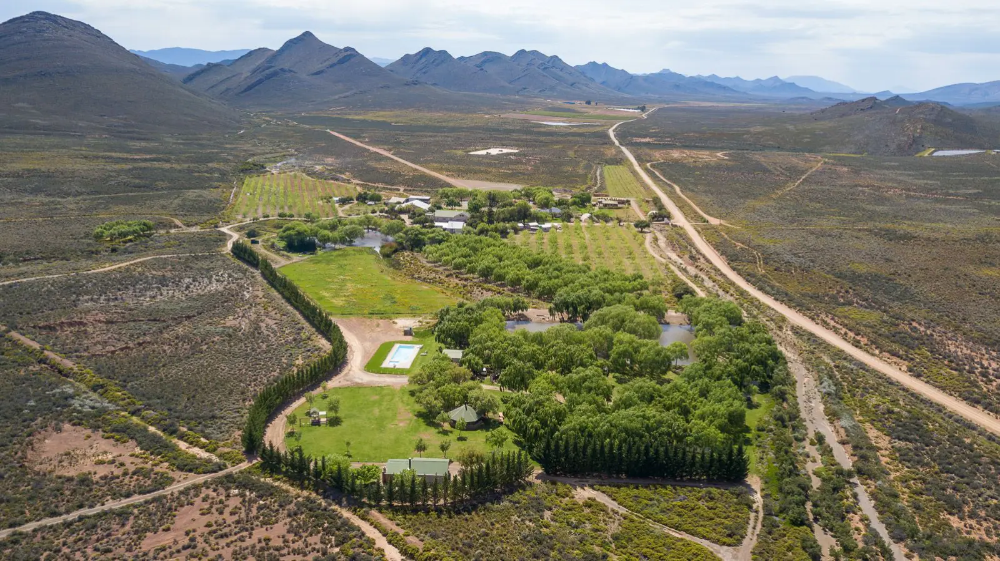

A farmer who sells farms.
More than 17 years ago, Dries bought his first farm in Montagu. Since then, by buying and selling, he has ended up with his dream farm, tucked away in the Montagu mountains.
That only works in an active property market, and Montagu has been one for some time. To find the right farm you need an honest, reliable and knowledgeable agent. Dries Barnard Properties specialises in farm and country estates, commercial properties and businesses.
Two Magnabs
A "Magnab" is the term for when one estate agent sells three neighbouring farms, to different purchasers. We have done it twice.
Farming since 1986
Dries has farmed cattle, goats, sheep, free-range animals, horses and game. He now farms under organic conditions, with no hormones or chemicals, producing lucerne, nuts, fruit, vegetables and other crops.
From decades in the field he has qualified contacts for water divining, fencing, drilling boreholes, earth moving, making roads, water testing and alternative energy: solar-pumped and inexpensive gravity-fed irrigation, a must at today's electricity prices.
Qualified
- NQF5 Principal Estate AgentDries has completed the latest NQF5 requirements for Principal Estate Agents.
- AuctioneersTrained by the S.A. College of Auctioneering. Members of SAIA and NAA.
- Registered agentsDries (Dawid Andreas Barnard) and Carol (Carol-Anne Odendaal) are both registered estate agents (EAAB).

Leeuwenboschfontein Guest Farm (635), Montagu.
The region
Farms around Montagu run from secluded valleys fed by natural springs and fountains, to mountains with proteas, aloes and the distant cry of fish eagles.
Montagu is one of the historic towns on the R62 wine route and a weekend destination for South Africans and overseas visitors alike. Farms here make good weekend retreats, and suit private game and hunting lodges.